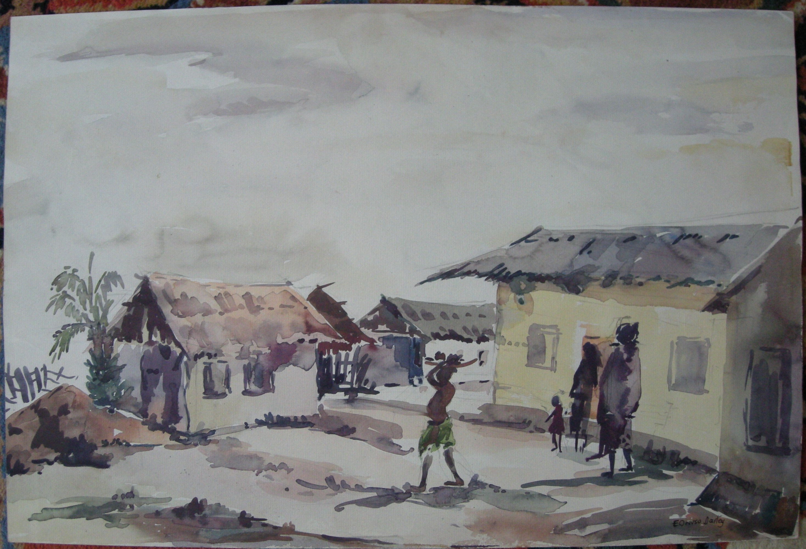

Emmanuel Owusu Dartey
1927–2018
Artist Biography
Emmanuel Owusu Dartey was born in Mamfe, Akwapim, Ghana. He was amongst the first students studying art at Kumasi College of Technology (KCT), which he attended from 1952-1955 alongside A O Bartimeus, Edmund Tetteh and other pioneers of Ghanaian modern art. He was a member of the Akwapim Six, founded in 1954, one of the earliest art societies in Ghana. Dartey studied advanced art at Kwame Nkrumah University of Science and Technology (KNUST, which developed from KCT) from 1961 to 1962 and then at the Rhode Island School of Design in the United States from 1963 to 1964. He won a prize in 1967 at the Leipzig International Graphic Art fair in East Germany. Dartey returned to Ghana to teach at KNUST during the 1970s and 80s, becoming the head of the Department of Painting and Sculpture. Known primarily as a watercolourist, Dartey’s work focused on Ghanaian scenes, often of rural subjects. His paintings have been exhibited in numerous locations including the Africa Centre, Lodnon in 1984, the Cultural Center in Kumasi and the National Museum in Accra. In 2021 he was the subject of a major solo show at the Faie Afrikan Art Gallery, located in Chicago. His work is in the collection of influential Ghanaian businessman Seth Dei and, having been gifted by the Harmon Foundation, is also held in some quantity by Fisk University in the United States. Fisk lent Dartey works to the major Phillips Collection exhibition in Washington 2023-24 on African Modernism in America 1947-67.

A Village Scene